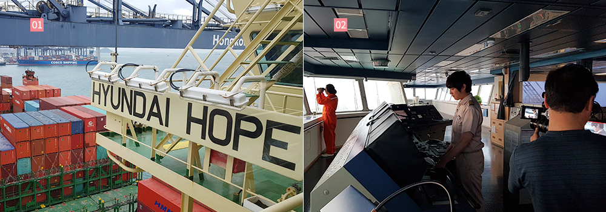
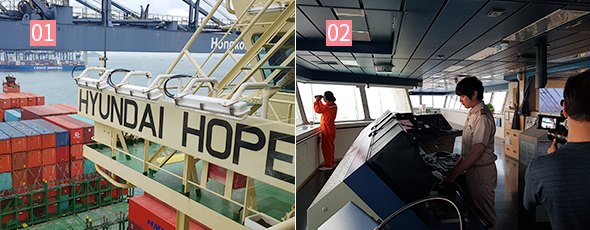
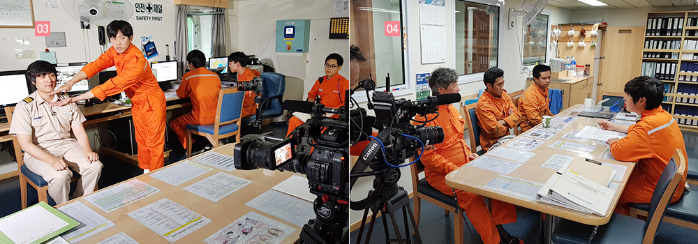
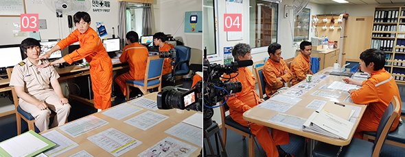
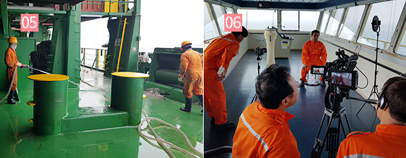
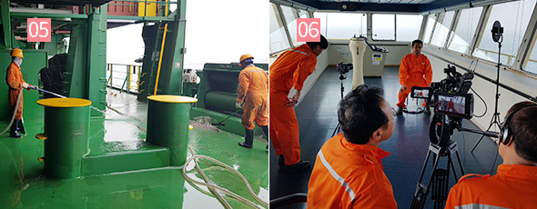

와 제 롤모델이 잡스에요!!! 아이폰 첫 출시되고 나서부터 계속 아이폰 쓰고 있는데 잡스가 너무 그리워요ㅠㅠ 지금은 돈만 벌려고 하는 것 같아서 디자인 발전도 없고ㅠㅠ와 제 롤모델이 잡스에요!!! 아이폰 첫 출시되고 나서부터 계속 아이폰 쓰고 있는데 잡스가 너무 그리워요ㅠㅠ 지금은 돈만 벌려고 하는 것 같아서 디자인 발전도 없고ㅠㅠ와 제 롤모델이 잡스에요!!! 아이폰 첫 출시되고 나서부터 계속 아이폰 쓰고 있는데 잡스가 너무 그리워요ㅠㅠ 지금은 돈만 벌려고 하는 것 같아서 디자인 발전도 없고ㅠㅠ와 제 롤모델이 잡스에요!!! 아이폰 첫 출시되고 나서부터 계속 아이폰 쓰고 있는데 잡스가 너무 그리워요ㅠㅠ 지금은 돈만 벌려고 하는 것 같아서 디자인 발전도 없고ㅠㅠ와 제 롤모델이 잡스에요!!! 아이폰 첫 출시되고 나서부터 계속 아이폰 쓰고 있는데 잡스가 너무 그리워요ㅠㅠ 지금은 돈만 벌려고 하는 것 같아서 디자인 발전도 없고ㅠㅠ
현장을 가다
EBS 다큐프라임 승선 촬영기
한 켤레의 운동화가
전달되기까지
데크오피스를 촬영 중인 EBS 카메라
글·사진
김성민 대리(대외협력실)
8월 27일, EBS 다큐프라임에서 ‘내 운동화는 몇 명인가?’라는 프로그램이 방영되었다. 우리가 흔히 소비하는 운동화 한 켤레가 사실은 많은 사람의 노력에 의해 우리에게 전달된다는 내용의 다큐멘터리로 말레이시아의 농장에서 채취한 고무가 유럽의 공장에서 한 켤레의 운동화로 만들어진 후 컨테이너 선박을 통해 한국으로 운송되는 과정이 상세하게 담겨 있었다. 다큐멘터리 영상의 마지막을 장식하는 선박은 다름 아닌 ‘현대 호프호’였다.
EBS 다큐프라임 주요 장면
출처 : EBS 제공
EBS 제작진의 취재 지원을 위해 현대 호프호에 승선한 것은 지난 6월 말 월드컵 열기가 서서히 끓어오르기 시작할 때였다. 제작진은 캐리어 10개 분량에 가까운 촬영 장비를 이고 홍콩항에 정박한 현대 호프호에 올랐다. 홍콩항에서 부산항까지 이동하는 3박 4일 동안 선원들의 일상을 촬영하기 위해서였다. 촬영은 승선과 동시에 진행되었다. 데크오피스는 선박이 정박해 있을 때는 가장 바쁜 곳이지만 반대로 항해 중에는 가장 비어 있는 곳이기 때문에 제작진은 출항 전 조금이라도 더 많은 장면을 카메라에 담고자 분주히 움직였다.


01 홍콩에 정박 중인 현대 호프호
02 항해당직 중인 권태수 1항사
정신 없이 촬영을 하다 보니 어느새 항해사들이 하나 둘씩 데크오피스에서 자취를 감췄다. 컨테이너 13,100개를 실을 수 있는 거대한 선박은 믿을 수 없을 만큼 조용하고 부드럽게 항해를 시작했고 이내 홍콩항을 벗어나 부산으로 뱃머리를 향했다. 길지 않은 밤이 지나고 해가 뜨기 전 우리는 아직 어둠이 남아 있는 선교로 발걸음을 향했다. 그 곳에는 안전한 항해를 위해 당직을 서고 있는 1항사와 갑판수가 있었다. 막 떠오르는 해가 남아 있는 어둠을 몰아내는 그 순간에도 항해사와 갑판수는 배가 나아가야 할 길에서 눈을 떼지 못하고 있었다.
선교 촬영을 마친 후 우리는 권태수 1항사와 인터뷰를 진행했다. 새벽 4시부터 8시까지 당직을 서느라 피곤할 법도 한데, 권태수 1항사는 흔쾌히 인터뷰에 임해 일을 시작하게 된 계기, 앞으로의 희망 등 방송에 나온 것보다 훨씬 많은 이야기를 풀어놓았다. 인터뷰를 마친 권태수 1항사는 곧바로 갑판부원들과 모여 업무 회의를 시작했다. 갑판에 실려 있는 화물의 상태를 확인하고 해수를 이용해 갑판을 청소하는 것이 그들의 주된 업무였다.


03 데크오피스에서 인터뷰를 시작하는 권태수 1항사
04 갑판 업무 회의를 진행 중인 선원들
제작진과 우리는 회의를 마치고 이동하는 갑판원들의 뒤를 쫓았다. 권태수 1항사와 더불어 이번 다큐멘터리의 주요 인물인 Myo가 일하는 모습을 촬영하기 위해서였다. 방송에 나온 것처럼 사다리를 타고 올라가 화물을 점검하는 모습, 갑판을 청소하는 모습에 인터뷰까지 진행하고 나니 어느새 저녁이 훌쩍 지나 버렸다.
 

05 갑판을 청소 중인 갑판원들
06 윙 브릿지에서 인터뷰 중인 갑판원 Myo
현대 호프호에는 Myo 이외에도 2명의 미얀마 선원이 더 있었다. 우리는 그들에게 부탁해 셋이 미얀마 음식을 만들어 먹는 장면을 촬영하고자 했다. 갑작스러운 주문에 서로 당황하는 것도 잠시 어느새 항해사와 선원들이 어우러져 음식을 만들기 시작했다. 제작진은 이 장면을 놓칠 세라 카메라를 분주히 돌렸다. 연출하려 한 것보다 훨씬 자연스러운 장면이 펼쳐졌으나, 아쉽게도 이 장면은 방송에서 대부분 편집되었다.
주방에서 야식을 만드는 선원들
그렇게 두 번째 밤을 보내고 맞이한 세 번째 날에 찾은 곳은 기관실이었다. 귀마개를 하지 않으면 머리가 띵할 정도의 굉음과 가만히 서 있어도 땀이 줄줄 흐르는 더위가 가득한 기관실에서 기기를 옮기고 수리하는 모습은 컨테이너선을 운항하는데 얼마나 많은 사람의 노고가 필요한지를 여실히 보여주는 장면이었다.
기기를 운반하는 기관사들
길 것만 같았던 3박 4일은 그렇게 순식간에 흘러 갔다. 다큐멘터리에는 비록 8분 내외로 짧게 다루어졌지만, 그 방송을 위해 EBS 제작진은 3박 4일 동안 잠까지 아껴가며 촬영을 진행했다. 덕분에 일반인에게 해운업과 현대상선의 존재를 알릴 수 있는 좋은 기회가 되었다. 끝으로 승선을 위해 물심양면 큰 도움을 주신 홍콩 주재원 분들과 바쁜 와중에도 적극적으로 촬영에 협조해 주신 현대 호프호 선원 여러분들에게 감사의 인사를 전하고 싶다.
#Tag
- #PI추진팀 #박상훈 #디지털트랜스포메이션
-
최고예요
322
-
좋아요
322
-
슬퍼요
322
-
그저 그래요
322
-
화나요
322